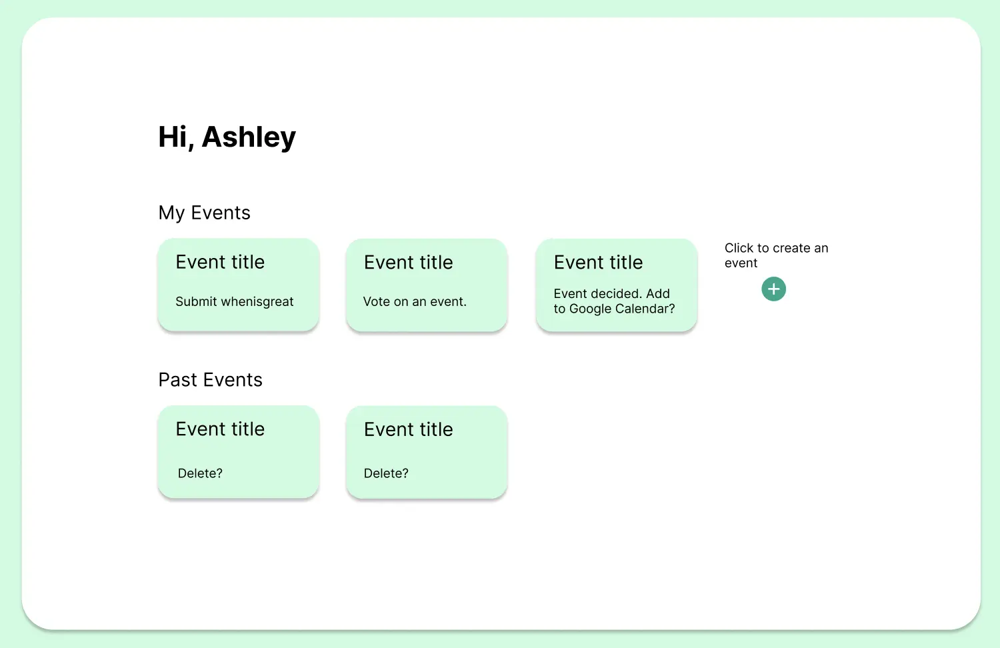
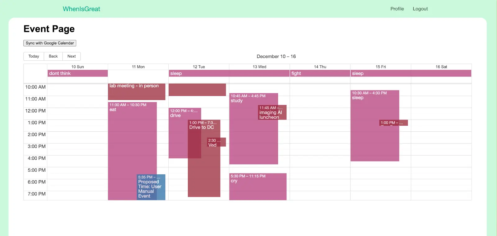
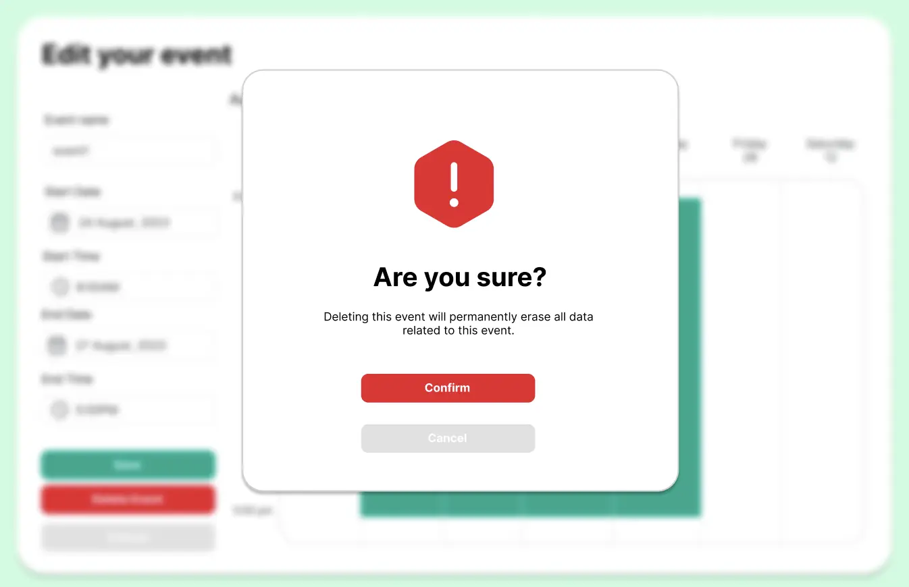
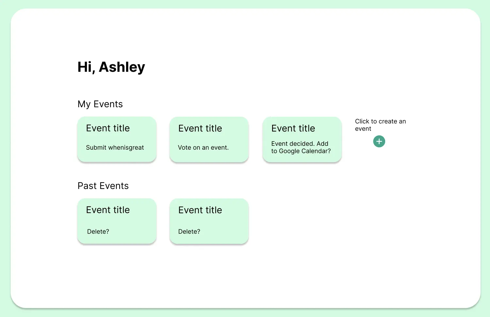
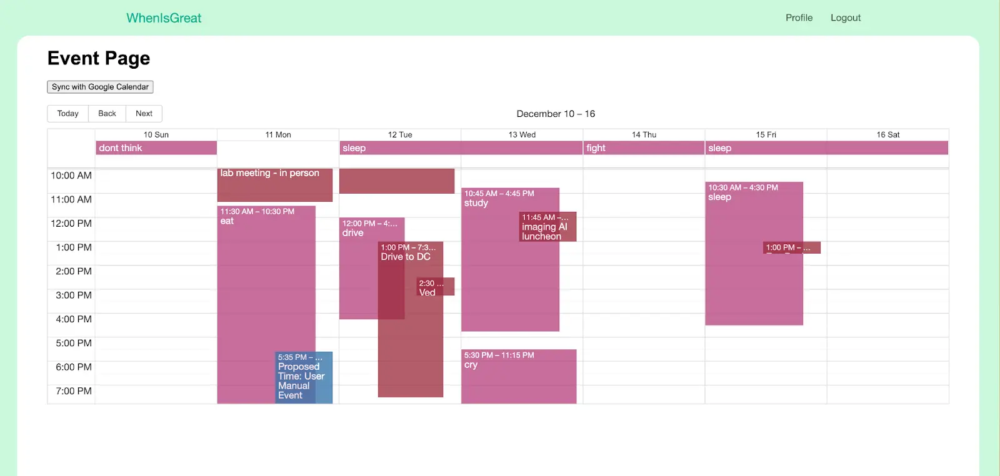
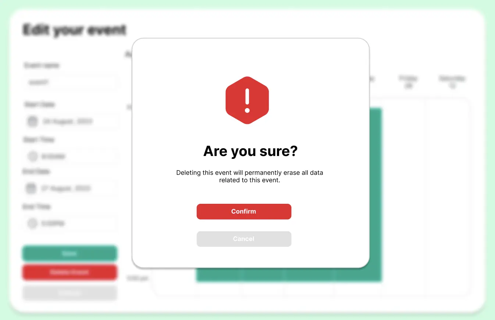

WhenIsGreat
Browser Application designed to streamline scheduling group meetings.
React
Spring Boot
MySQL
Java
CSS
HTML
JavaScript
Role:
Developer
Team Size:
4 people
Release:
2023
WhenIsGreat is a browser-based scheduling platform designed to make scheduling faster, simpler, and more intuitive than existing tools. It allows users to log in using their Google accounts, create an event, and share it with others via email or link. Members can sync their Google Calendars or manually input availability, which is then merged into a shared calendar view. The platform highlights availabilities, allowing users to vote on meeting times and finalize the best option. Once finalized, the system generates a Google Calendar event for members.
Responsibilities
Frontend / UI Developer
- Designed and implemented user interfaces using React.
- Ensured smooth interaction between UI components and backend APIs by connecting components.
- Handled data flow between frontend, backend, database, and Google Calendar services.
- Assisted with UI testing, bug fixes, and system integration.
 




